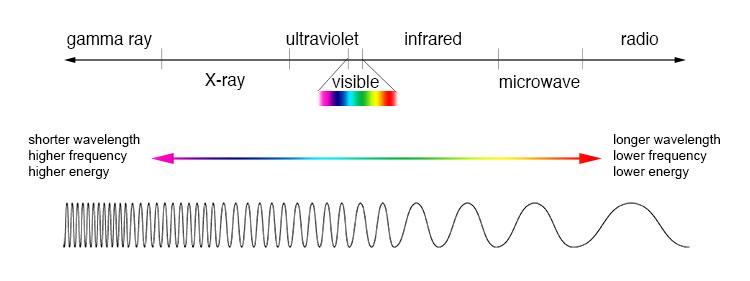

The electromagnetic spectrum is a spectrum containing electromagnetic waves - these waves are transverse waves containing a second transverse wave which vibrates at right angles to the first transverse wave. The two transverse waves are electric and magnetic waves, hence electromagnetic.
The electromagnetic spectrum contains a lot of waves, with varying wavelengths and frequencies. Here's what they are:
Electromagnetic waves are detected by using certain antennas - think about your television. On your roof, you likely have a TV antenna - this picks up the radio waves broadcast, and then manipulates the data sent along with this to make light and sound. This is the same principle along which most EM wave detectors work.